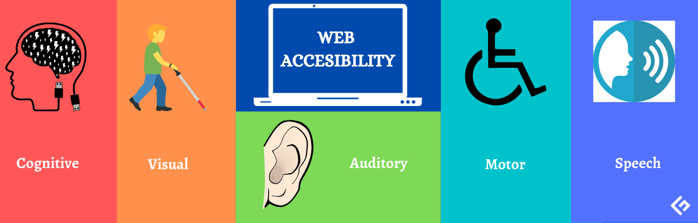

Web Accessibility
When websites and web tools are properly designed and coded, people with disabilities can use them. However, currently many sites and tools are developed with accessibility barriers that make them difficult or impossible for some people to use.
Making the web accessible benefits individuals, businesses, and society. International web standards define what is needed for accessibility.
The below video gives us basic idea of accessibility